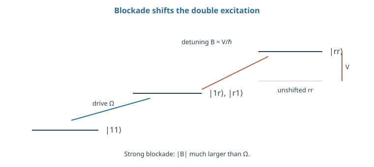
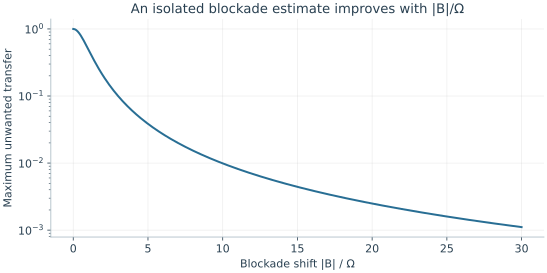

Starting point: Chapters 1–9; physical concepts and approximations are introduced as needed.
Anchor example: Two atoms with a Rydberg blockade shift.
This lesson includes explanations, worked examples, and problems with solutions. Advanced results whose proofs are outside the chapter are identified explicitly.
Ions are held by their charge and coupled by it. A neutral atom has no net charge, so it offers neither handle. What can hold an uncharged atom, and what can make two of them interact? Light answers the first question: a far-detuned beam shifts an atom's ground energy, and the atom settles where the light is brightest. For the second, ground-state atoms barely interact, but an atom whose electron is excited into a very large orbit interacts strongly with a neighbour in a similar state. Can that interaction make a pulse conditional?
We first derive the light shift that traps an atom, and ask what loading many traps at once costs. Encoding the qubit in two ground states needs a way to drive them, which leads to a two-photon Raman transition through a far-detuned level. Exciting atoms to strongly interacting states gives the blockade, and following four inputs through a pulse sequence turns the blockade into a controlled-Z. Finally we ask how atoms are read and lost, and how interaction strength, decay, and parallel operation trade against one another across an array.
Our first question is how light can hold a neutral atom.
10.1 Atom Arrays
An array of neutral atoms needs a trap for each atom and a qubit inside each atom. How does light make a trap, and how is a qubit stored in states that light should not disturb? The energy shift of a far-detuned two-level atom gives the trapping potential, and counting loading probabilities shows why atoms are rearranged. Two long-lived ground states then store the qubit, driven through an intermediate level that is never really occupied.
10.1.1 Optical traps and loading
How can light hold an atom it does not excite? Treat the atom as two levels, with a laser detuned by \(\Delta=\omega_0-\omega_L\) from the transition and coupling \(\Omega\). In the rotating frame the Hamiltonian has levels \(0\) and \(\hbar\Delta\), joined by \(\hbar\Omega/2\). For \(|\Omega/\Delta|\ll1\), the eigenvalue attached to the ground state shifts by \(-\hbar\Omega^2/(4\Delta)\). This light shift is proportional to the light intensity, since \(\Omega^2\) is. For positive \(\Delta\), a laser below resonance, the shift is negative and largest where the light is brightest. An atom is therefore drawn to the focus of the beam, which forms an optical tweezer.
A real atom has many levels, so actual trap depths need a multilevel calculation. Near the bottom of the trap, the motion is again a harmonic oscillator.
How reliably do the traps fill? Loading is random. If ten prescribed sites each load independently with probability 0.6, all ten are occupied with probability \(0.6^{10}\simeq0.00605\). So we do not wait for every target to load at once. We image the array, find the occupied sites, and move atoms into the target pattern with steerable tweezers. This step is called rearrangement.
10.1.2 Internal-state encoding
Which internal states store the qubit? Two long-lived ground states, so that the qubit neither decays nor needs an optical excitation to sit still. Optical pumping prepares them. Microwaves can rotate them, but they act on every atom at once. To address single atoms we use light, and a laser couples a ground state only to an excited state, which decays. How can light connect the two ground states without occupying the excited state?
Use two beams, one coupling each ground state to a common excited state \(e\), both detuned by a large \(\Delta\). In the rotating frame, \(i\dot c_e=\Delta c_e+(\Omega_1c_0+\Omega_2c_1)/2\). When \(\Delta\) is much larger than every other rate, \(c_e\) follows the ground amplitudes almost instantly, so we set \(\dot c_e\simeq0\):
Substituting this into the two ground-state equations gives an off-diagonal coupling of magnitude \(\hbar|\Omega_1\Omega_2|/(4|\Delta|)\), which corresponds to an effective Rabi frequency \(|\Omega_1\Omega_2|/(2|\Delta|)\). It also gives each ground state a light shift that must be compensated. This two-photon process is a Raman transition, and replacing the fast amplitude by its slowly following value is called adiabatic elimination. It assumes a small excited-state amplitude and slowly varying pulses. Occasional scattering through \(e\), motion, and laser phase noise remain physical errors.
Problem 10.1. If sites load independently with probability 0.6, what is the probability that ten prescribed sites are occupied?
Worked solution
It is 0.6¹⁰ ≈ 0.00605. This toy calculation explains why rearrangement can matter even when individual loading looks reasonably successful.
10.2 Rydberg Gates
Ground-state atoms in separate tweezers barely interact. How can a brief excitation make one atom's evolution depend on its neighbour? Exciting both atoms to strongly interacting states shifts the doubly excited state out of resonance, which blocks the second excitation. Following four inputs through a pulse sequence then shows how that blockade becomes a controlled-Z.
10.2.1 Excitation and blockade
What makes two neutral atoms interact strongly? Excite the electron to a very high level, far from the nucleus. Such a Rydberg state, written \(\ket r\), has a large and easily distorted charge distribution, so two Rydberg atoms interact strongly even several micrometres apart. Let a resonant laser couple each atom's state \(\ket1\) to \(\ket r\), and let two Rydberg excitations have interaction energy \(V\). In the pair basis we add \(V\ket{rr}\bra{rr}\) to the sum of the two single-atom drives. Write \(B=V/\hbar\). Once one atom is in \(\ket r\), exciting the second is detuned by \(B\).
How much does that detuning suppress the second excitation? By the mismatch bound for an isolated transition, the transfer is at most \(\Omega^2/(\Omega^2+B^2)\). So strong blockade means \(|B|\gg\Omega\); it does not mean that \(\ket{rr}\) has disappeared.
How far does the blockade reach? We take as an atomic-physics input that, in the van der Waals regime, \(V=C_6/R^6\) at separation \(R\), with \(C_6\) an energy times a length to the sixth power. Defining the blockade radius by \(|V|=\hbar\Omega\) gives \(R_b=(|C_6|/(\hbar\Omega))^{1/6}\).
10.2.2 Conditional phase accumulation
How does blockade become a gate? Apply a π pulse to the control atom, a 2π pulse to the target, then another π pulse to the control, using the same optical phase for both control pulses. Follow each input. A resonant 2π rotation returns a state to itself with the sign \(-1\), and two π pulses do the same.
With the control in \(\ket0\), the control is never excited. A target in \(\ket1\) then completes its 2π cycle and gains \(-1\), while a target in \(\ket0\) is untouched. With the control in \(\ket1\), the control goes to \(\ket r\) and back, gaining \(-1\). If the target is in \(\ket1\), blockade stops it from cycling, so it gains nothing more.
The ideal diagonal phases are therefore \((1,-1,-1,-1)\) in the order 00, 01, 10, 11. Applying Z to each qubit multiplies these by \((1,-1,-1,1)\), giving \((1,1,1,-1)\): a controlled-Z. Finite blockade adds extra phase and leakage, and decay from \(\ket r\) breaks the ideal unitary. So the pulse phases and local corrections are part of the gate's definition; "blockade" names only the interaction mechanism.

The added energy of |rr⟩ changes the resonance condition for the second excitation. The levels and arrows are schematic; a full gate also needs pulse phases and local corrections.
Problem 10.2. For \(B=20\Omega\), bound transfer in the simple blockade model.
Worked solution
The maximum is \(1/401\approx0.00249\). It is not the total error of a Rydberg gate: decay, pulse errors, and other levels remain.
10.3 Readout and Scaling
An array must report its atoms' states and keep operating as atoms are lost and gates run side by side. What does an image tell us, and how should an empty site be counted? Imaging gives occupancy, which mixes a state outcome with atom loss unless loss is recorded separately. Balancing blockade against decay, and accounting for many gates at once, then sets the operating point of the array.
10.3.1 Detection and atom loss
What does an image report? Depending on the sequence, it reports occupancy, internal state, or a mix of the two. A common method removes atoms in one internal state before imaging. An empty site then means either that state or an atom lost earlier, and without another measurement the two cannot be told apart.
So we record a third outcome, loss, whenever the apparatus can identify it. An encoded qubit with probabilities \(p_0,p_1,p_{\rm loss}\) must keep all three in the unconditional report. An error announced by a detector signal is called heralded, and an error whose location is known is called an erasure. A heralded erasure is easier for error correction to handle than an error at an unknown place, but it does not restore the lost state. Fluorescence scattering can also heat or eject neighbouring atoms, so a readout must be judged on its effect on the rest of the array as well as on its assignment.
10.3.2 Gate trade-offs and parallel control
How fast should a blockade gate be? A blockade gate balances interaction against lifetime. Take a simple illustrative error model in which imperfect blockade contributes \(c_1(\Omega/B)^2\) and Rydberg decay during the pulse contributes \(c_2/(\Omega\tau_r)\), where \(\tau_r\) is the relevant lifetime. Increasing \(\Omega\) shortens the gate, which lowers the second term but raises the first. Setting the derivative of their sum to zero gives
\[\Omega^3=\frac{c_2B^2}{2c_1\tau_r}.\]
This is the optimum of the simplified model, not of shaped, multilevel gates.
What changes across a whole array? Distances vary, so \(B\) varies from pair to pair, and gates run at the same time can blockade each other. Pairs operated in parallel must therefore be far apart compared with the blockade radius. Rearrangement takes time between rounds, and the light shift can vary from site to site. The useful figure for an array is a schedule: which gates run together, how often atoms are reloaded, and what each step costs in time and error.

At |B|/Ω = 20 the bound is 1/401. It excludes Rydberg decay, pulse phase error, motion, and multilevel structure; it is not a total gate infidelity.
Problem 10.3. Why should detected atom loss not be recorded as measurement zero?
Worked solution
That would merge an erasure with a valid state outcome and bias the data. Record occupancy or a separate loss flag and define how the computation handles it.
A semiconductor chip could hold far more qubits than an optical array, if a single electron trapped in it could serve as one. What two-state property does an electron carry even when its position is fixed?
Worked model check. Double the atom separation in a C6/R6 interaction regime. If the original blockade shift was 64 times Ω, what is it afterward?
Worked solution
It falls by \(2^6=64\), leaving \(|B|=\Omega\). The isolated-transition maximum transfer rises from about \(1/4097\) to one half, so the original strong-blockade assumption fails.
These exercises draw on the whole chapter. Attempt each question before opening a hint, explain your reasoning, then compare it with the worked solution.
A \(100\)-site array loads each site independently with probability \(0.5\). Find the expected number of atoms, its standard deviation, and the probability that all \(100\) are loaded. Why is rearrangement essential?
Hint 1
Binomial mean \(np\) and standard deviation \(\sqrt{np(1-p)}\).
Hint 2
\(0.5^{100}\approx8\times10^{-31}\).
Worked solution
Mean \(50\), standard deviation \(5\). The chance of loading all \(100\) is \(0.5^{100}\approx10^{-30}\): it never happens. Imaging the array and moving atoms into a defect-free target region turns a random half-filled array into a deterministic register, at the cost of extra time and possible atom loss during the moves.
In a Raman transition with \(\Omega_1/2\pi=\Omega_2/2\pi=100\) MHz and intermediate detuning \(\Delta/2\pi=10\) GHz, find the effective Rabi frequency \(|\Omega_1\Omega_2|/(2|\Delta|)\) and the resulting \(\pi\)-pulse time.
Hint 1
Work in cycles: \(100\times100/(2\times10^4)\) MHz.
Hint 2
\(t_\pi=\pi/\Omega_{\rm eff}\).
Worked solution
\(\Omega_{\rm eff}/2\pi=10^4/(2\times10^4)=0.5\) MHz, so \(t_\pi=1/(2\times0.5\ \text{MHz})=1\) μs. Large detuning keeps the excited state nearly empty, at the price of needing strong beams to reach a useful Rabi frequency.
With \(V=C_6/R^6\), the blockade radius is \(R_b=(|C_6|/\hbar\Omega)^{1/6}\). By what factor does \(R_b\) change if the Rydberg Rabi frequency is doubled? By what factor does the blockade shift change if the atom separation is reduced by \(20\%\)?
Hint 1
\(R_b\propto\Omega^{-1/6}\).
Hint 2
\(V\propto R^{-6}\); \(0.8^{-6}\approx3.8\).
Worked solution
Doubling \(\Omega\) multiplies \(R_b\) by \(2^{-1/6}\approx0.89\): the blockade radius shrinks by \(11\%\). Moving the atoms \(20\%\) closer multiplies \(V\) by \(0.8^{-6}\approx3.8\). The steep \(R^{-6}\) law makes blockade strength very sensitive to spacing, and the blockade radius only weakly sensitive to drive strength.
A blockade gate is calibrated for atoms at separation \(R\) with \(B=20\Omega\). (a) Give the isolated-transition bound for doubly excited population. (b) The atoms are placed at \(2R\) by mistake. Find the new \(B/\Omega\) and the bound. (c) What happens to the conditional phase?
Hint 1
\(V\propto R^{-6}\), so doubling \(R\) divides \(B\) by \(64\).
Hint 2
Bound \(\Omega^2/(\Omega^2+B^2)\).
Worked solution
(a) \(1/(1+400)=1/401\approx2.5\times10^{-3}\). (b) \(B=20\Omega/64\approx0.31\Omega\), and the bound becomes \(1/(1+0.098)\approx0.91\): the second atom is almost freely excited. (c) With little blockade, the \(\ket{11}\) input behaves almost like the others, the conditional phase nearly disappears, and population is left in \(\ket{rr}\). Atom positions must be controlled well within the range where \(B\gg\Omega\).
Use the model error \(c_1(\Omega/B)^2+c_2/(\Omega\tau_r)\) with \(c_1=c_2=1\), \(B/2\pi=100\) MHz, and \(\tau_r=100\) μs. (a) Find the optimal \(\Omega\) from \(\Omega^3=B^2/(2\tau_r)\). (b) Evaluate both error terms and their sum. (c) How does the optimum change if the Rydberg lifetime doubles?
Hint 1
\(B\approx6.28\times10^8\ \mathrm{s^{-1}}\).
Hint 2
\(\Omega\propto\tau_r^{-1/3}\).
Worked solution
(a) \(\Omega=(B^2/2\tau_r)^{1/3}\approx(3.95\times10^{17}/2\times10^{-4})^{1/3}\approx1.25\times10^7\) rad/s, so \(\Omega/2\pi\approx2.0\) MHz. (b) \((\Omega/B)^2\approx4.0\times10^{-4}\) and \(1/(\Omega\tau_r)\approx8.0\times10^{-4}\), totalling about \(1.2\times10^{-3}\). (c) Doubling \(\tau_r\) lowers the optimal \(\Omega\) by \(2^{-1/3}\) and the total error by about \(2^{-2/3}\approx0.63\). In this model both a stronger interaction and a longer lifetime help, but only through modest powers.
The two qubit states of a trapped atom experience light shifts that differ by \(0.1\%\) of the trap depth \(U/h=1\) MHz. (a) Find the differential shift. (b) If atoms in different sites (or moving within a site) sample depths that vary by \(\pm20\%\), estimate the spread of qubit frequencies and the dephasing time scale. (c) Name a technique that reduces this effect.
Hint 1
Differential shift \(=10^{-3}\times1\) MHz.
Hint 2
A frequency spread \(\delta f\) dephases on a time scale near \(1/(2\pi\delta f)\).
Worked solution
(a) \(1\) kHz. (b) A \(\pm20\%\) variation gives a spread of about \(\pm200\) Hz, which dephases a Ramsey signal on a time scale near \(1/(2\pi\times200\ \text{Hz})\approx0.8\) ms. (c) Spin echo refocuses static site-to-site differences; “magic” trap wavelengths or polarizations that equalize the two states’ light shifts remove the differential shift at its source. Motion within a site is not static, so echo helps less for it.
An array of \(200\) sites loads each with probability \(0.55\). A target register needs \(100\) atoms. (a) Find the mean and standard deviation of the number loaded. (b) A binomial calculation gives \(P(\ge100\ \text{loaded})\approx0.93\). What fraction of attempts must be repeated? (c) If each rearrangement move loses an atom with probability \(10^{-3}\) and about \(100\) moves are needed, how many atoms are lost on average?
Hint 1
Mean \(110\), standard deviation \(\sqrt{200\times0.55\times0.45}\).
Hint 2
Expected losses \(=\) moves \(\times\) loss probability.
Worked solution
(a) Mean \(110\), standard deviation about \(7.0\). (b) About \(7\%\) of attempts load too few atoms and must be repeated. (c) About \(0.1\) atoms lost per assembly, so roughly one assembly in ten has a vacancy after rearrangement. Loading statistics, move fidelity, and imaging time together set the repetition rate of the whole processor.
A student says: “Detuning the Raman beams further from the excited state always reduces spontaneous scattering, so the gate keeps improving with \(\Delta\).” For a fixed effective Rabi frequency \(\Omega_{\rm eff}=\Omega^2/(2\Delta)\) (equal beams), show how the scattering per gate scales with \(\Delta\), and identify the cost.
Hint 1
Excited-state population scales as \((\Omega/\Delta)^2\).
Hint 2
At fixed \(\Omega_{\rm eff}\), \(\Omega^2\propto\Delta\).
Worked solution
Keeping \(\Omega_{\rm eff}\) fixed requires \(\Omega^2=2\Delta\Omega_{\rm eff}\), so laser power grows linearly with \(\Delta\). The excited-state population scales as \((\Omega/\Delta)^2\propto1/\Delta\), and scattering per gate falls as \(1/\Delta\). So further detuning does reduce scattering, but only by demanding proportionally more power, which is limited, heats optics, and increases light shifts that must be stabilized. Eventually other excited levels or available power set the limit, not the detuning alone.
Take \(C_6/h=100\ \mathrm{GHz\cdot\mu m^6}\) and \(\Omega/2\pi=2\) MHz. (a) Find the blockade radius. (b) For atoms at \(4\) μm, find \(B/\Omega\). (c) A second pair performs a gate simultaneously, \(8\) μm away. Estimate the interaction between pairs relative to \(\Omega\), and discuss whether it matters.
Hint 1
In frequency units, \(R_b^6=(100\ \text{GHz}/2\ \text{MHz})\ \mu\mathrm m^6=5\times10^4\ \mu\mathrm m^6\).
Hint 2
\(4^6=4096\), \(8^6=262144\).
Worked solution
(a) \(R_b=(5\times10^4)^{1/6}\ \mu\mathrm m\approx6.1\) μm. (b) \(V/h=10^{11}/4096\ \text{Hz}\approx24\) MHz, so \(B/\Omega\approx12\): well blockaded. (c) At \(8\) μm, \(V/h\approx0.38\) MHz, about \(0.19\Omega\). That is too weak to blockade, but not negligible: it shifts the doubly excited energies of the two pairs and causes conditional phase errors of order \((0.19)^2\) or larger in parallel gates. Parallel operation needs pairs separated well beyond \(R_b\), or schedules that avoid simultaneous Rydberg excitation of nearby pairs.
Detected atom loss can be treated as an erasure: the decoder knows which qubit failed. Consider a three-qubit repetition code storing a classical bit. (a) How many unknown bit flips can it correct, and how many known erasures? (b) If each qubit independently suffers either a flip or a detected loss, which type of error should the hardware prefer, and why? (c) What extra requirement does this place on readout?
Hint 1
With erasures, the remaining unerased bits all carry the correct value.
Hint 2
Two erasures leave one good bit.
Worked solution
(a) It corrects one unknown flip by majority vote, but two known erasures: as long as one qubit remains, its bit is correct, so only erasure of all three fails. (b) Detected loss is preferable: a code of distance \(d\) corrects \(d-1\) erasures but only \(\lfloor(d-1)/2\rfloor\) unknown errors, so converting errors into heralded erasures roughly doubles the protection. (c) The readout must reliably distinguish loss from a valid \(0\) or \(1\), with a third outcome, and the loss must be detected without disturbing the other qubits.